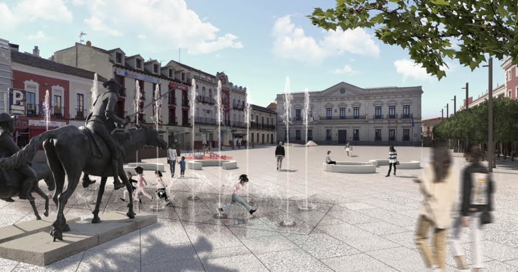

El origen de Alcázar de San Juan se pierde en la Edad de Piedra, pues de esta época se han encontrado en nuestro término municipal restos de algunas civilizaciones asentadas en esta zona habitualmente, como es el caso de hachas pulimentadas, puntas de flechas y cerámicas, entre otros objetos. Más adelante parece ser que fuimos sede de algunos campamentos celtíberos, formados ante la invasión romana. Algunos historiadores creen en la conjetura de que fuimos la antigua Alces, ciudad pre-romana que conquistó el pretor Sempronio Graco cuando se sometió esta región a Roma. En el itinerario de Marco Antonio se la designa con el nombre de «Murum».
De esta época se conservan los mosaicos romanos sobre cuya cronología todavía existen dudas. Su primer excavador, Valero Aparisi, afirma que se realizaron a finales del siglo II, principios del siglo III, mientras Carmen García Bueno los fecha en el siglo IV, basándose en el estudio de las emisiones monetarias, material cerámico y los propios mosaicos. Se descubrieron en los 50, debido a unas obras del alcantarillado y cabe pensar, si tenemos en cuenta las dimensiones de algunas de las dependencias excavadas (una de ellas medía más de 90 m2 ), que la villa de Alcázar sería de unas dimensiones muy considerables, por lo que se imagina que pudo ser un importante foco de romanización.
cuanto al material utilizado en la realización de los mosaicos, las teselas son de piedra del país, de un tamaño medio. Los colores que conforman estos mosaicos son de una gama formada por el blanco, negro, amarillo, rojo, azul, morado, gris, verde y siena. Hay un fragmento de mosaico con teselas más pequeñas que combina doce tonos diferentes, que le da una riqueza cromática extraordinaria. Son formas geométricas con temática de motivos vegetales y estilizados que forman guirnaldas, orlas, figuras zoomórficas o motivos aislados. Desafortunadamente, la interrupción de las excavaciones nos hace de momento de carecer de datos e información más concluyente para demostrar lo que en otro tiempo se negaba: la plena romanización de esta zona y su inclusión en las rutas comerciales de la época.
Paso de otras civilizaciones se conserva poco o casi nada, pero es muy probable que fuéramos un pueblo visigodo, por los estudios hechos en la composición arquitectónica del templo de Santa María la Mayor. Con la invasión árabe en el año 711, La Mancha se convirtió en tierra de nadie, campo de batalla que tenía a un lado la Media Luna y al otro las armas cristianas. Los árabes dotaron a esta zona de un importante complejo defensivo, al que llamaron «Al-kasar», que significa Alcázar-palacio fortificado. De esta manera, el nombre de nuestra ciudad sugiere la unión de dos culturas distintas, de dos maneras de ser diferentes, árabe una, representada por la palabra «Al-kasar» y cristiana la otra por ser de San Juan.
La Historia de Alcázar de San Juan es muy amplia y va desde la edad de piedra hasta nuestros tiempo, pasando por la invasión árabe, la Edad Media o el Siglo de Oro. Recoger 20 siglos de historia es casi imposible, por eso, en esta sección encontrará un resumen de lo más destacado de nuestra historia dividido en 3 bloques, fundamentales para entenderla: Uno que englobaría desde la Edad de Piedra hasta la Época Romana, otro que iría desde la Invasión Árabe hasta el siglo XVIII y, un tercer bloque que recoge Alcázar de San Juan desde principios del Siglo XIX hasta finales del Siglo XX.